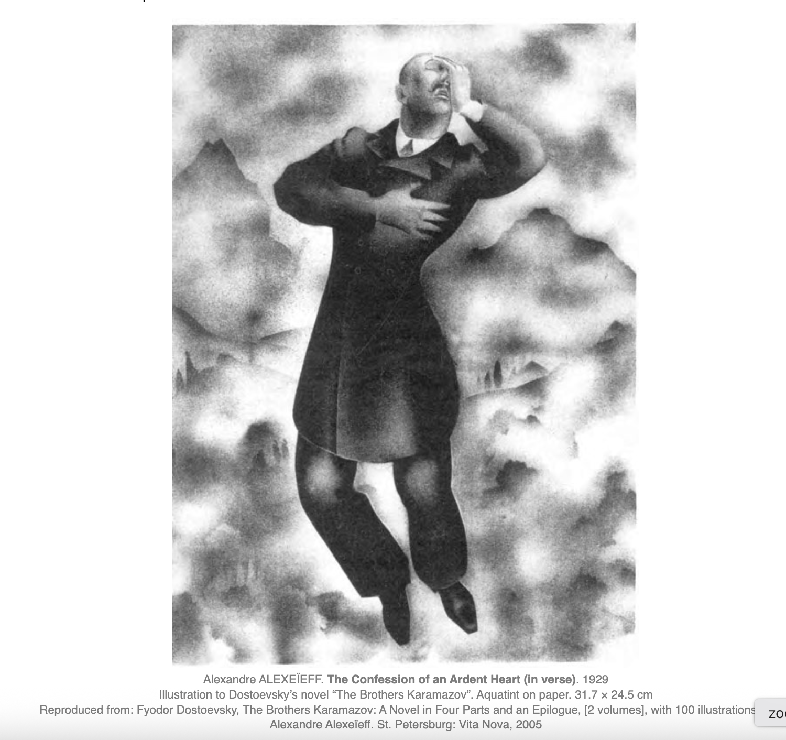

Book 3 Notes
- Chapter 1 Servants
Grigory and Marfa bring up all children
has a six-fingured child (95)
hates Adelaida, like Sofia(94)
- Chapter 2 Stinking Lizaveta
holy fool (96)
raped by Fedor
son Smerdyakov, born in a bathouse (96)
miracle: Lizaveta is brougt by miracle to Fedor's garden (99-100)
Pavel Smerdyakov (100), Last name invented by Fedor
- Chapter 3 The Confession of an Ardent Art. In Verse.
key to the “Karamazov nature” — sensual, self-tormenting.
this confession is a moral act: Mitya’s honesty is the first step toward possible redemption. He admits his guilt (what happened?)
It contrasts Mitya’s emotional confession with Ivan’s later rational confession (The Grand Inquisitor). (distopia)
Alyosha’s role is that of empathic listener — the one to whom others reveal their souls.
"No, man is broad, even too broad, I would narrow him down" (108).

- Chapter 4 Confession. In Anecdotes
Mitia: "money is an accessory, a fever of the soul, an ambience" (108).
Mitia: "my insect sensuality" (109)
Mitia: "Ivan knows everything... but Ivan is a grave" (110)
Mitia: Katerina is proud and virtuous (111)
Mitia's offer: "Why don't you send me your institute girl?" for money to save her father (112). A demo of Mitia's insect sensuality. A Sonia narrative.
When Katerina comes, Mitia torments her first (bastard 113-14) then gives her money and let's her go (114).
Money in this chapter:
Fedor sends 6000 rubles to Mitia,
Colonel needs 4500
Mitia gives Katerina 5000
- Chapter 5 Confession, "Heels Up!""
KI gives Mitia money to buy him
Mitia spends money in Mokroye with Grushenka. He is in love. He only killed her little left toe (118).
Mitia's sensualist comment :)
Fedor prepared 3K to buy Grushenka (120)
Smerdiakov know and Mitia knows
Mitia is "keeping a secret watch" to stop Grushenka and he says to Alesha he might kill Fedor (122)
Mitia also says that he believes "in a miracle of divine Providence" (121).
- Chapter 6. Smerdyakov
Fedor calls him Balaam's ass (from Numbers 22-24) (123)
24 yrs old (124)
kills cats as a child (124)
mocks holy scriptures (124)
epilepsy (124)
does not like visit to Moscow (125)
vain: likes fashionable clothes (126)
Dost compares him with a character on Kramskoi's painting Contemplator (1876)
- Chapter 7 Disputation
Smerdyakov uses twisted logic to prove that renouncing faith is а little sin (130)
Sm does this for Ivan (to win his support as Fedor says) (128)
Sm. is Balaam's ass for Ivan to show him where his rationalism leads him. Smerdiakov comes to dinner more often after Ivan arrived to the house (127).
- Chapter Eight. Over the Cognac
Father with Ivan and Alesha
talk about the existence of God: Ivan: no God, Alesha: there is (134)
Fedor talks to Alesha about sex with Sofia and how he spat on icons in her presence. Alesha replicates Sofia's sufferings.
Fedor forgets that Sofia was also Ivan's mother (138)
Dmitri rushes in to interrupt the revelation that Ivan is cut off divine wisdom.
- Chapter 9. The Sensualists.